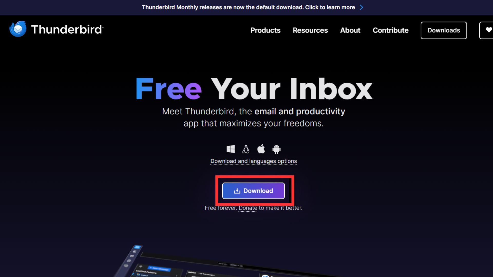

Step 1: Download & Install Thunderbird
1.1 Download Installer
Go to the official Thunderbird website: https://www.thunderbird.net.
Click on the Download button to get the installer for your operating system.

1.2 Run Installer
Once downloaded, open the installer file.
Click "Next"
Click "Next"

Click "Install"
Click "Finish"
Step 2: Setup Email Account
2.1 Open Thunderbird
After installation, launch Mozilla Thunderbird.
2.2 Start Email Setup

Click on the hamburger menu
It's at the upper-right corner of Thunderbird
Select "New Account"
Select "Email"
Enter your name, email address, and password, and click "Continue"
Click "Done"

Congratulations, your account has been successfully created